Remember the relative velocity expression for two point masses, each moving at its own with \(\boldsymbol{v}^a\) and \(\boldsymbol{v}^b\), separated by the position vector \(\boldsymbol{r}^{b/a}\)
[a freehand depiction of the operation stage]
Relative velocity signifies the difference between the velocities of the point masses \(\boldsymbol{v}^{b/a} = \boldsymbol{v}^b - \boldsymbol{v}^a\) which is sometimes just referred to as \(\boldsymbol{v}^{rel}\).
The relative velocity between two point masses can be split into its components parallel to (\(\parallel\)) and perpendicular to (\(\perp\)) the axis that joins them. These can be written as \(\boldsymbol{v}^{rel}_\parallel\) and \(\boldsymbol{v}^{rel}_\perp\)
Note that \(\boldsymbol{v}^{rel}_\parallel\) indicates the increase/decrease of distance between the two points, while \(\boldsymbol{v}^{rel}_\perp\) indicated the relative rotation of one point about the other, from which we can induce \(\boldsymbol{v}^{rel}_\perp = \boldsymbol{\omega} \times \boldsymbol{r}\) to determine the angular velocity vector.
For two points on the same rigid body the expression of relative motion becomes slightly simplified as the distance between them never changes, in other words \(\boldsymbol{v}^{rel}_\parallel=0\), always.
Thus, it is always true that \[ \boldsymbol{v}^{rel} = \boldsymbol{v}^{rel}_\perp \]
[freehand depicting of observer sitting on the top of the body of an airliner at point \(A\), and as the airlines goes through roll, yaw and pitch motions, other points around him seem to be rotating in certain directions but not moving away or towards him]
This means that it will always be true for two points on the same rigid body that their relative motion can be expressed in terms of pure rotation
\[ \boldsymbol{v}^b = \boldsymbol{v}^a + \boldsymbol{\omega} \times \boldsymbol{r}^{b/a} \]
or inversely
\[ \boldsymbol{v}^a = \boldsymbol{v}^b + \boldsymbol{\omega} \times \boldsymbol{r}^{a/b} \]
Problems expressed in terms of relative motion can be solved directly by using the vector equation, or in terms of its scalar components. In many cases, a graphical approach is also known to work (graphical velocity analysis)
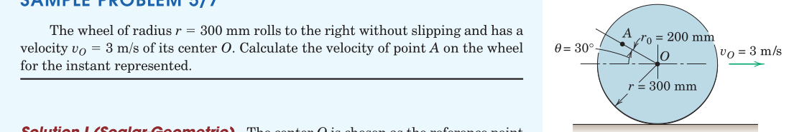
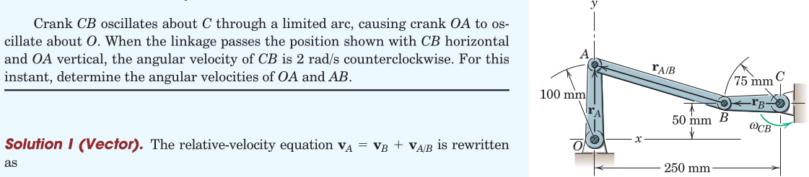
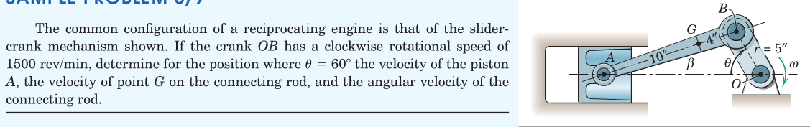
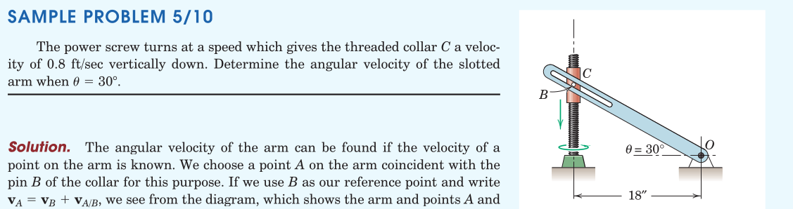
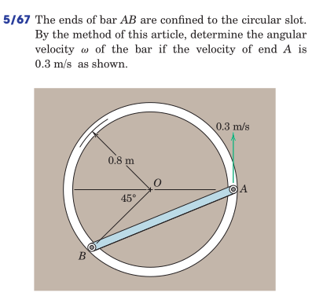
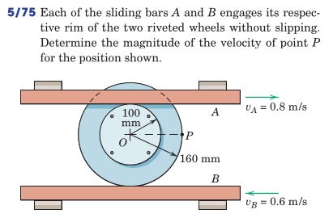
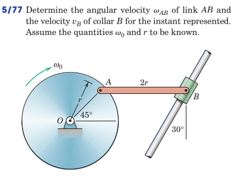
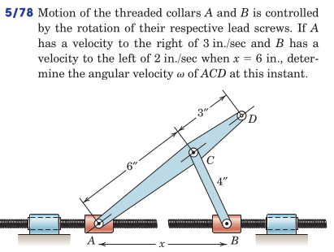
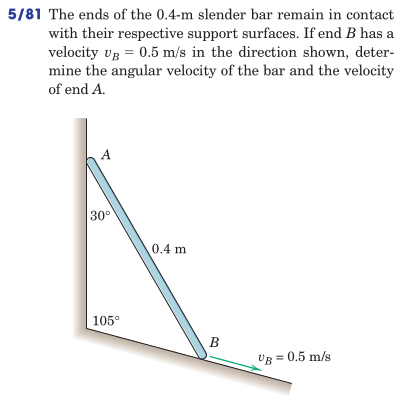
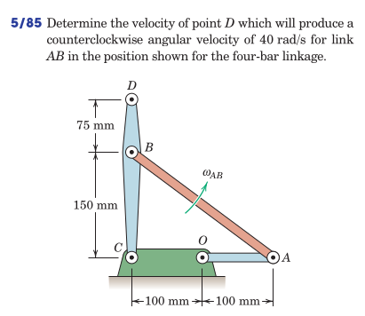
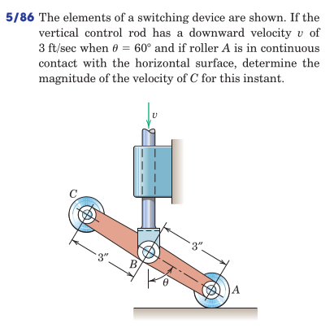
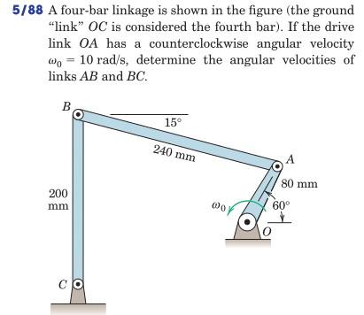
From Hibbeler, Engineering Mechanics: Dynamics: Chapter 16: 8, 12, 17, 18, 23, 30*, 36, 37, 43, 45, 48, 49, 52